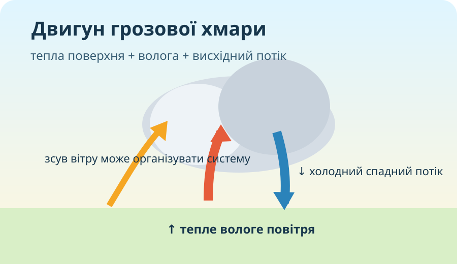
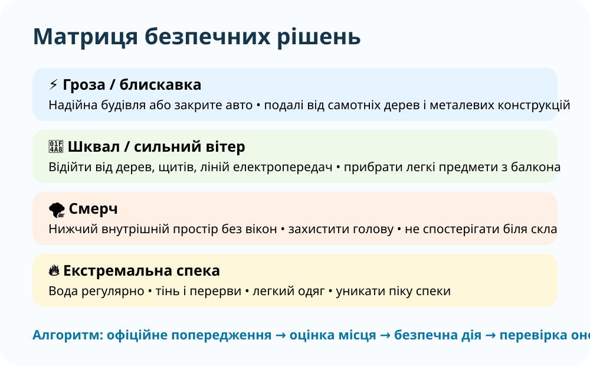

Конвективна система з блискавкою. Може супроводжуватися зливою, градом і сильними поривами.
1. Атмосферний детектив: що тут небезпечне?

Спостереження: закручена хмарна система, щільні хмари, великий просторовий масштаб.
Питання: що ще потрібно знати, перш ніж оголосити явище «небезпечним» саме для вашої місцевості?
2. Розпізнай явище за набором ознак
Доказова пастка. «Є блискавка — отже обов’язково буде град». Чому це хибний висновок? Які умови потрібні для формування великого граду?
3. Лабораторія конвекції: коли хмара стає небезпечною?

Це навчальна модель, а не прогноз. Вона показує логіку: енергія + волога + організація висхідних потоків підвищують потенціал сильних конвективних явищ.
4. Гроза, град, шквал, смерч: не плутайте механізми
Льодяні частинки ростуть у сильних висхідних потоках грозової хмари; більший град потребує потужнішого потоку.
Раптове значне посилення вітру на короткий час, часто біля грози або фронту.
Сильно обертова колона повітря, що з’єднує основу грозової хмари з поверхнею.
Зіставте явище й ознаку.
5. Реальні дані й попередження
WMO Severe Weather Information Centre
Глобальний центр офіційних попереджень про небезпечні погодні явища. Використовуйте саме попередження національних метеослужб, а не випадкові дописи.
Відкрити WMO →Windy — радар і грози
Порівнюйте опади, вітер і грозову активність. Не робіть висновок лише за одним шаром.
Відкрити Windy →Міні-розслідування. Знайдіть ділянку з інтенсивними опадами. Перемкніть шар на вітер. Чи збігаються максимуми? Сформулюйте висновок без слова «завжди».
6. Екстремальна спека: небезпека без хмар

Чому для оцінки ризику спеки недостатньо лише максимальної температури?
7. Безпека: рішення за 20 секунд

8. Коротке відео: як супутники бачать сильні шторми
NASA Goddard: супутники GOES допомагають метеорологам стежити за розвитком сильних грозових систем.
Після перегляду запишіть: 1 ознаку, яку видно із супутника, і 1 річ, яку не можна надійно визначити лише з картинки.
9. Теорія після дослідження
Атмосферний процес, здатний завдати шкоди людям, господарству чи довкіллю. Ризик залежить не лише від сили явища, а й від того, хто й що опинилося під його впливом.
Те, що трапляється нечасто в певній місцевості. Рідкісність не означає автоматично небезпечність, а небезпечність — рідкісність.
Офіційне повідомлення метеослужби про очікуване або вже наявне небезпечне явище. Воно важливіше за неофіційний прогноз у соцмережі.
10. CER: «Небо почорніло — треба тікати під дерево»
11. Домашнє завдання
§34. Створіть односторінковий буклет/постер «Небезпечна погода моєї місцевості»: 3 явища → ознаки → надійне джерело попередження → правильна дія → одна типова помилка. Додатково: запропонуйте 3 способи запобігти зневодненню й тепловому удару.
Електронний підручник ВШО →12. Підсумковий тест — 10 балів
Тест відкриється після заповнення всіх полів.